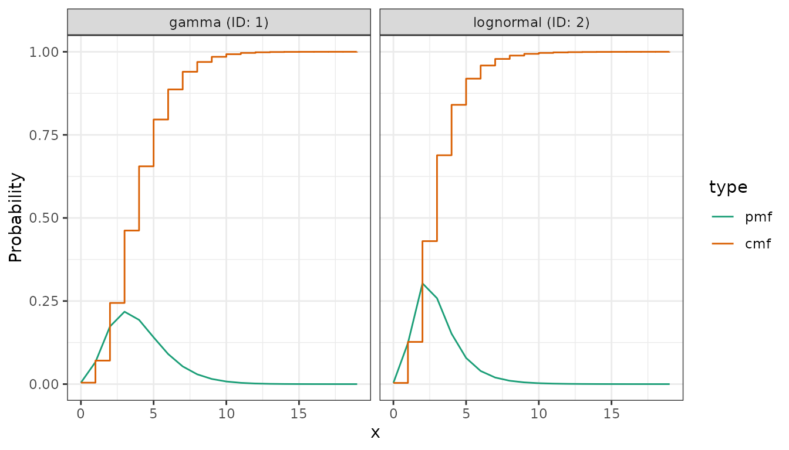
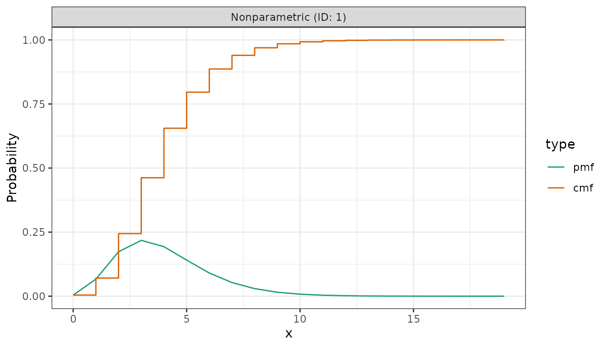
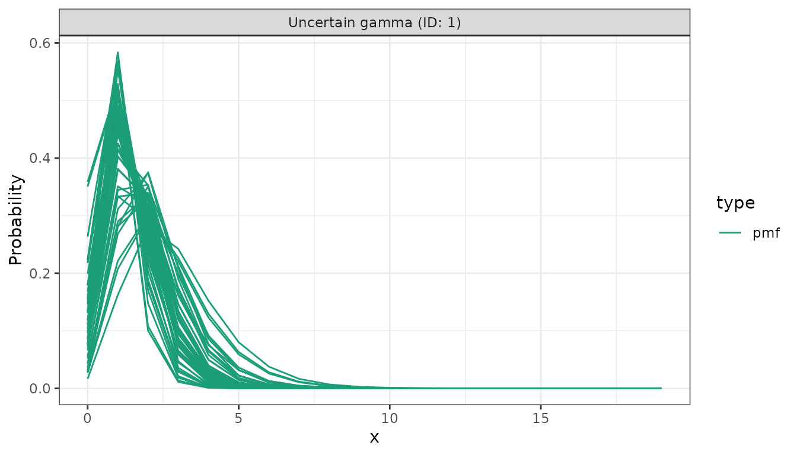

library(distspec)
#>
#> Attaching package: 'distspec'
#> The following objects are masked from 'package:stats':
#>
#> Gamma, sd
library(ggplot2)In distspec, a probability distribution is a single object: a
<dist_spec>. It can hold fixed parameters or
uncertain ones, and the same functions work on either.
Quick start
Add two delays with +, discretise to a probability mass
function, and plot:
delays <- Gamma(mean = 4, sd = 2, max = 20) +
LogNormal(meanlog = 1, sdlog = 0.5, max = 20)
get_pmf(collapse(discretise(delays)))
#> [1] 1.575639e-05 7.774458e-04 1.014705e-02 4.346165e-02 9.800319e-02
#> [6] 1.456661e-01 1.643242e-01 1.534134e-01 1.251838e-01 9.253855e-02
#> [11] 6.351282e-02 4.119038e-02 2.557434e-02 1.535600e-02 8.989614e-03
#> [16] 5.165638e-03 2.930517e-03 1.649767e-03 9.258817e-04 5.201756e-04
#> [21] 2.935802e-04 1.657837e-04 9.204736e-05 4.981584e-05 2.623759e-05
#> [26] 1.344782e-05 6.713756e-06 3.270010e-06 1.556508e-06 7.251518e-07
#> [31] 3.310044e-07 1.480833e-07 6.488306e-08 2.777755e-08 1.156102e-08
#> [36] 4.630397e-09 1.747153e-09 5.903038e-10 1.510470e-10
plot(delays)
Defining a distribution
Each distribution has its own constructor. Give it the natural parameters, or a mean and standard deviation that distspec converts for you:
Gamma(shape = 2, rate = 0.5)
#> - gamma distribution:
#> shape:
#> 2
#> rate:
#> 0.5
Gamma(mean = 4, sd = 2)
#> - gamma distribution:
#> shape:
#> 4
#> rate:
#> 1
LogNormal(meanlog = 1, sdlog = 0.5)
#> - lognormal distribution:
#> meanlog:
#> 1
#> sdlog:
#> 0.5A finite maximum (and, for parametric distributions, a
cdf_cutoff) truncates the support:
Gamma(mean = 4, sd = 2, max = 20)
#> - gamma distribution (max: 20):
#> shape:
#> 4
#> rate:
#> 1Uncertain parameters
Any parameter can be a number or, to express uncertainty about its
value, another <dist_spec>. Uncertain parameters must
be given as the natural parameters:
uncertain <- Gamma(shape = Normal(2, 0.5), rate = Normal(0.5, 0.1))
uncertain
#> - gamma distribution:
#> shape:
#> - normal distribution:
#> mean:
#> 2
#> sd:
#> 0.5
#> rate:
#> - normal distribution:
#> mean:
#> 0.5
#> sd:
#> 0.1
# the mean of an uncertain distribution is unknown unless we ignore uncertainty
mean(uncertain)
#> Returning NA: this distribution has uncertain parameters.
#> ℹ Use `mean(x, ignore_uncertainty = TRUE)` for the mean of the point estimates,
#> or resolve the uncertainty first with `fix_parameters()`.
#> This message is displayed once every 8 hours.
#> [1] NA
mean(uncertain, ignore_uncertainty = TRUE)
#> [1] 4fix_parameters() resolves an uncertain distribution to a
fixed one, taking either the mean of each prior or a sample from it:
fix_parameters(uncertain, strategy = "mean")
#> - gamma distribution:
#> shape:
#> 2
#> rate:
#> 0.5Discretising
discretise() turns a continuous distribution into a
nonparametric probability mass function over
0, 1, 2, ...:
pmf <- discretise(Gamma(mean = 4, sd = 2, max = 20))
get_pmf(pmf)
#> [1] 4.348792e-03 6.644381e-02 1.734249e-01 2.178947e-01 1.932673e-01
#> [6] 1.407835e-01 9.044713e-02 5.327464e-02 2.944744e-02 1.550665e-02
#> [11] 7.859601e-03 3.862608e-03 1.850583e-03 8.678941e-04 3.997049e-04
#> [16] 1.812269e-04 8.105858e-05 3.582527e-05 1.566718e-05 6.787387e-06Combining distributions
Adding two distributions convolves them into a composite
<dist_spec>. To turn that composite into a single
probability mass function, discretise each component,
collapse() them into one nonparametric distribution, and
read off the PMF vector with get_pmf():
combined <- Gamma(mean = 4, sd = 2, max = 20) +
LogNormal(meanlog = 1, sdlog = 0.5, max = 20)
get_pmf(collapse(discretise(combined)))
#> [1] 1.575639e-05 7.774458e-04 1.014705e-02 4.346165e-02 9.800319e-02
#> [6] 1.456661e-01 1.643242e-01 1.534134e-01 1.251838e-01 9.253855e-02
#> [11] 6.351282e-02 4.119038e-02 2.557434e-02 1.535600e-02 8.989614e-03
#> [16] 5.165638e-03 2.930517e-03 1.649767e-03 9.258817e-04 5.201756e-04
#> [21] 2.935802e-04 1.657837e-04 9.204736e-05 4.981584e-05 2.623759e-05
#> [26] 1.344782e-05 6.713756e-06 3.270010e-06 1.556508e-06 7.251518e-07
#> [31] 3.310044e-07 1.480833e-07 6.488306e-08 2.777755e-08 1.156102e-08
#> [36] 4.630397e-09 1.747153e-09 5.903038e-10 1.510470e-10This get_pmf(collapse(discretise(d1 + d2))) pipeline is
the usual way to combine two delays into a single PMF. The result is
itself a <dist_spec>, so the same summaries work on
it:
mean(collapse(discretise(combined)))
#> [1] 7.079356Plotting
plot() draws the probability mass function of a
distribution, and its cumulative distribution function when
cumulative = TRUE. Each component of a composite is shown
in its own facet:
plot(discretise(Gamma(mean = 4, sd = 2, max = 20)))
An uncertain distribution is drawn as a sample of PMFs from its
priors, one line per draw. Here cumulative = FALSE shows
the mass functions on their own:

Sampling
sample_dist() draws random samples from a distribution
with fixed parameters:
sample_dist(Gamma(mean = 4, sd = 2, max = 20), n = 5)
#> [1] 1.722019 3.144967 2.247215 4.465974 3.535231Uncertain nonparametric distributions
Instead of a fixed PMF, a nonparametric distribution can carry a
Dirichlet() prior over its bins, leaving its PMF
uncertain:
est <- NonParametric(pmf = Dirichlet(c(0, 2, 4, 3)))
est
#> - nonparametric distribution:
#> pmf:
#> - dirichlet distribution:
#> alpha:
#> 0 2 4 3It then has no concrete PMF until you resolve it with
fix_parameters(). has_uncertainty() reports
whether a distribution carries a prior:
has_uncertainty(est)
#> [1] TRUE
has_uncertainty(Gamma(shape = 2, rate = 0.5))
#> [1] FALSE